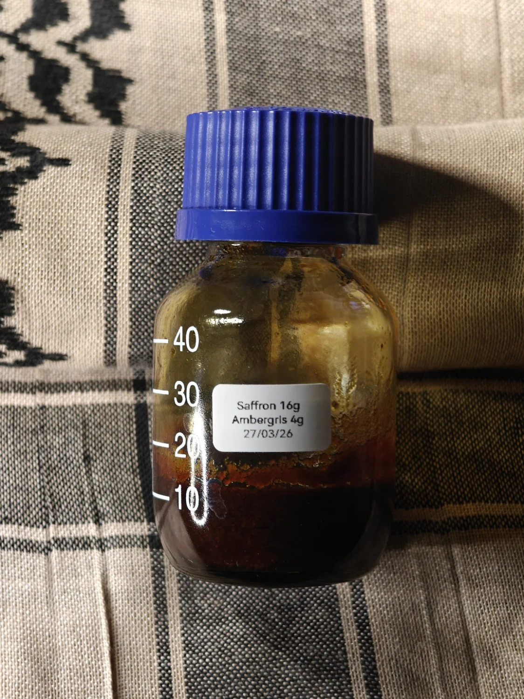

Saffron x Ambergris
Saffron walks up to some ambergris and asks "are you sure this will work? Are you Absolutely sure this will end successfully?"
A solid absolute paste, freshly boiled water constantly poured over the vessel as a bain marie which without will barely move,
the saffron being already separable from its solids and oil mixed with ambergris that separates from its grounds to exude aromatic lipids is a cause of concern - a beautiful aromatic cause of concern.
Neither material readily becomes a workable material - they need a solvent or highly liquid medium to do something in the very least, adding both into a maceration creates an absolute:
the ambergris ground is saturated by the fragrant oil from the crushed saffron, the specks of saffron strands hydrate with the lipid from ambergris, both settle into each other and become a "thing".
A very good definition of an immovable object meets an unstoppable force.
Both materials are warm and sensual, both are edible but not gourmand, both alluring yet fantastical -
a simultaneous blend of can and cannot; both macerating into each other like a two perfectly fitted puzzle pieces.